El sistema web de control administrativo de ventas e inventarios Inventarysoft permite la gestión integral de los procesos administrativos y comerciales de una organización. Abarca desde la configuración y parametrización del sistema, hasta el control de productos, inventarios, ventas y clientes, asegurando la correcta administración de la información operativa. La plataforma está compuesta por módulos especializados de gestión de inventarios, ventas, clientes, seguridad y control de accesos, infraestructura del sistema, parametrización, reportes y notificaciones, los cuales operan de forma integrada para mejorar la eficiencia operativa, la trazabilidad de la información y el apoyo a la toma de decisiones.
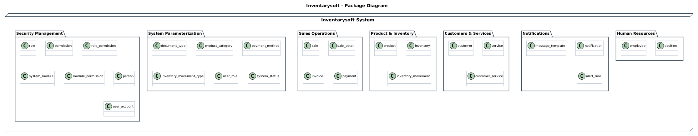
@startuml
title Inventarysoft – Package Diagram
package "Security Management" {
class role
class permission
class role_permission
class system_module
class module_permission
class person
class user_account
}
package "System Parameterization" {
class document_type
class product_category
class payment_method
class inventory_movement_type
class user_role
class system_status
}
package "PSales Operations" {
class sale
class sale_detail
class invoice
class payment
}
package "Product & Inventory Management"" {
class product
class inventory
class inventory_movement
}
package "Customers & Services" {
class customer
class service
class customer_service
}
package "Notifications" {
class message_template
class notification
class alert_rule
}
package "Flight Operations" {
class flight
class crew_assignment
class ticket
class baggage
}
package "Human Resources" {
class employee
class position
}
@enduml
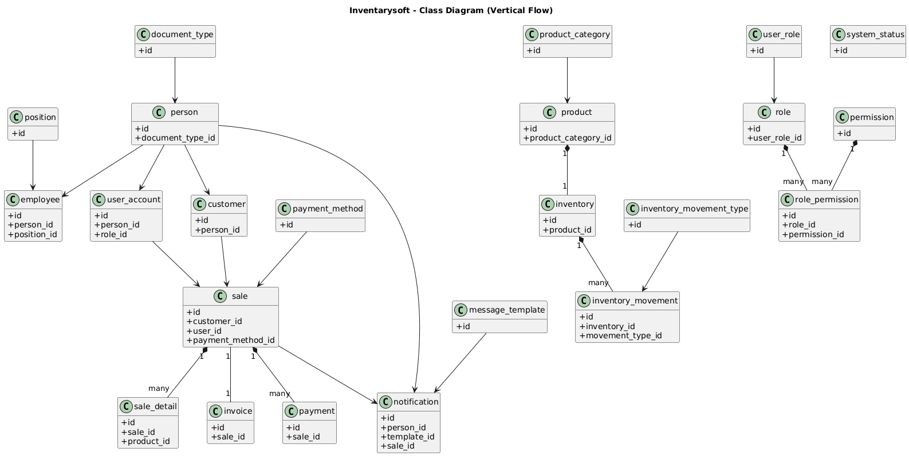
@startuml
title Inventarysoft – Class Diagram (Vertical flow)
' --- NIVEL 1: PARÁMETROS ---
class document_type { +id }
class product_category { +id }
class payment_method { +id }
class inventory_movement_type { +id }
class user_role { +id }
class system_status { +id }
class position { +id }
class message_template { +id }
' --- NIVEL 2: ENTIDADES BASE ---
class person {
+id
+document_type_id
}
class product {
+id
+product_category_id
}
class role {
+id
+user_role_id
}
class permission {
+id
}
' --- NIVEL 3: OPERATIVAS ---
class employee {
+id
+person_id
+position_id
}
class user_account {
+id
+person_id
+role_id
}
class customer {
+id
+person_id
}
class role_permission {
+id
+role_id
+permission_id
}
class inventory {
+id
+product_id
}
' --- NIVEL 4: TRANSACCIONES ---
class sale {
+id
+customer_id
+user_id
+payment_method_id
}
class inventory_movement {
+id
+inventory_id
+movement_type_id
}
' --- NIVEL 5: DETALLES Y NOTIFICACIONES ---
class sale_detail {
+id
+sale_id
+product_id
}
class invoice {
+id
+sale_id
}
class payment {
+id
+sale_id
}
class notification {
+id
+person_id
+template_id
+sale_id
}
' ==========================================
' RELACIONES
' ==========================================
document_type -> person
product_category -> product
user_role -> role
position -> employee
message_template -> notification
payment_method -> sale
inventory_movement_type -> inventory_movement
person -> employee
person -> user_account
person -> customer
role "1" *-- "*" role_permission
permission "1" *-- "*" role_permission
product "1" *-- "1" inventory
inventory "1" *-- "*" inventory_movement
customer -> sale
user_account -> sale
sale "1" *-- "*" sale_detail
sale "1" -- "1" invoice
sale "1" *-- "*" payment
sale -> notification
person -> notification
@enduml
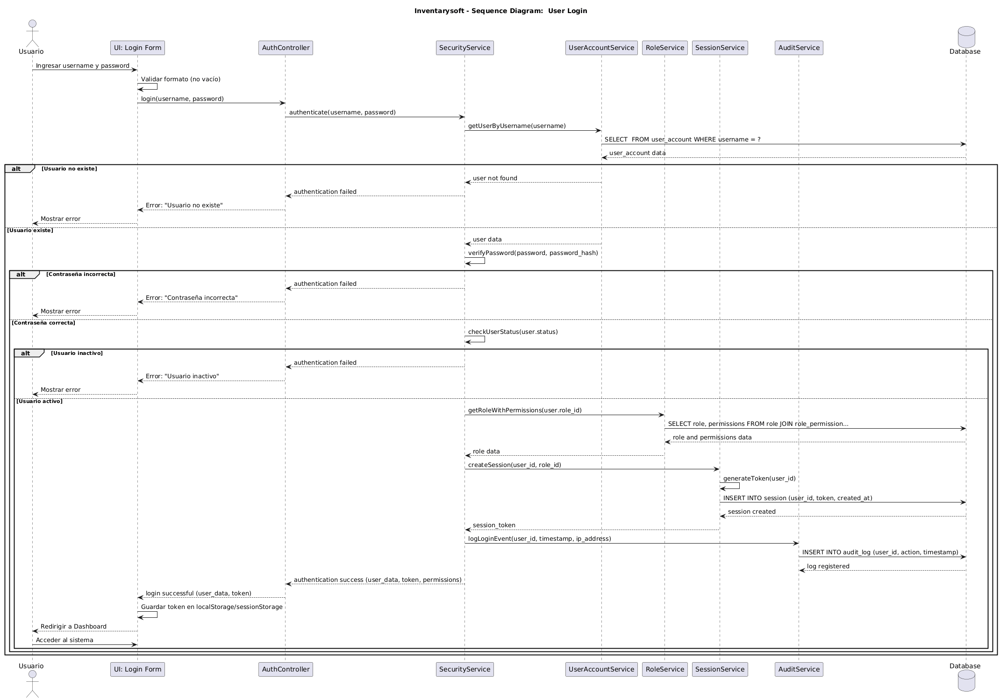
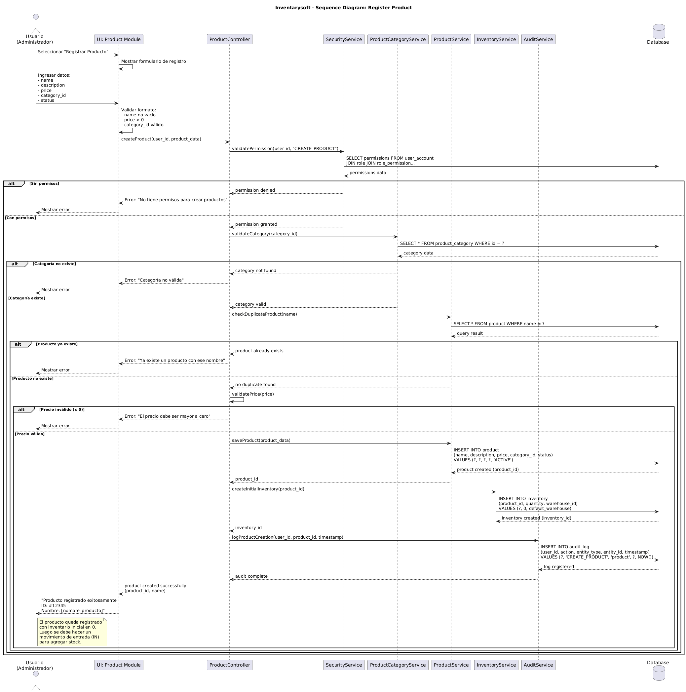
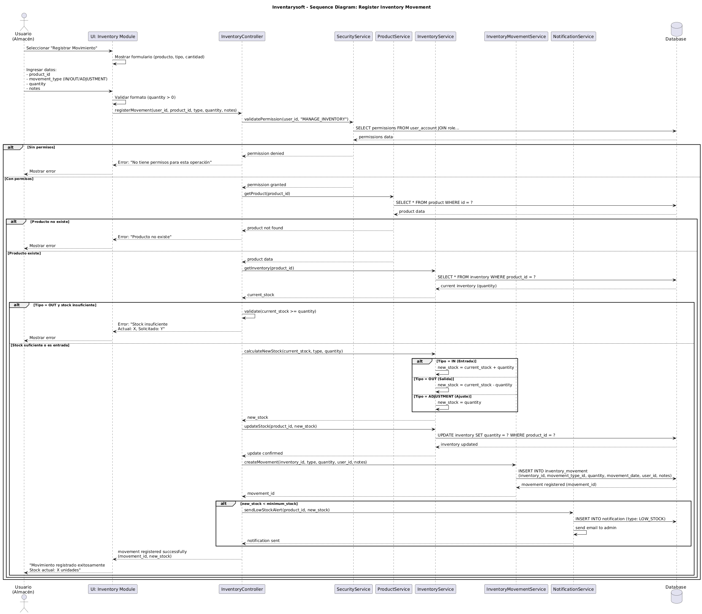
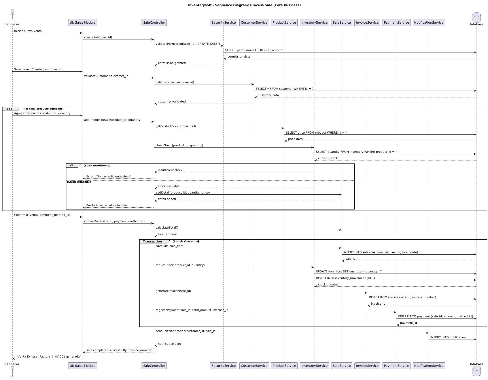
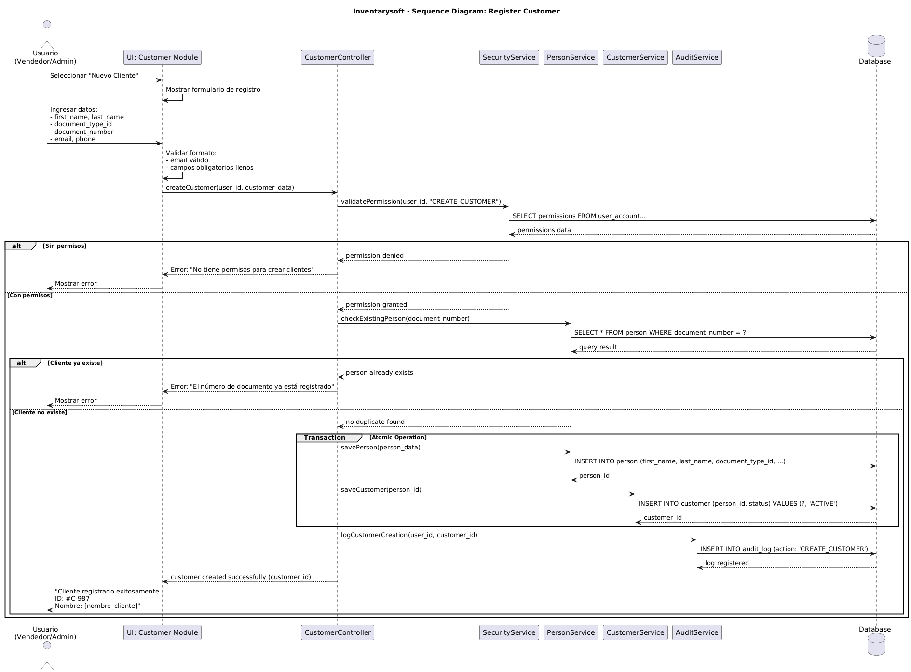
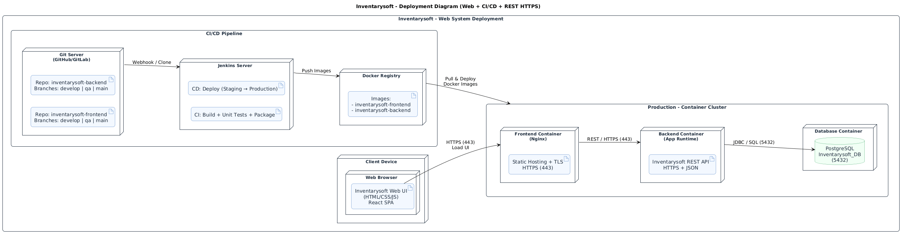
@startuml
title Inventarysoft - Deployment Diagram
node "Cloud Environment" {
node "CI/CD Pipeline" {
component "GitHub Repo\nBranches: develop, qa, main" as GitHub
component "Jenkins" as Jenkins
GitHub -> Jenkins : Webhook/Clone
}
node "Container Cluster" {
node "Frontend Container" {
component "Web App\nReact SPA" as Web
}
node "Backend Container" {
component "REST API\n(Node/Java/Python)" as API
}
node "Database Container" {
database "PostgreSQL\nInventarysoft_DB" as DB
}
Web -> API : REST/HTTPS
API -> DB : JDBC
}
Jenkins -> "Container Cluster" : Build & Deploy
}
@enduml
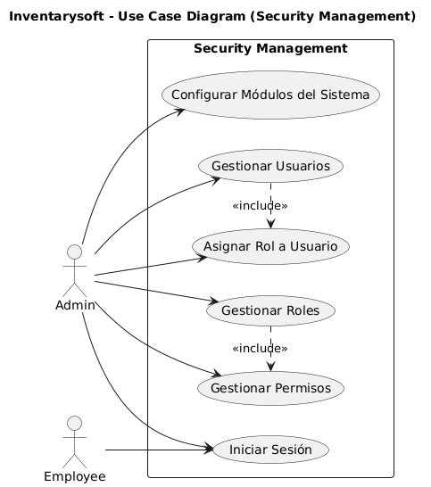
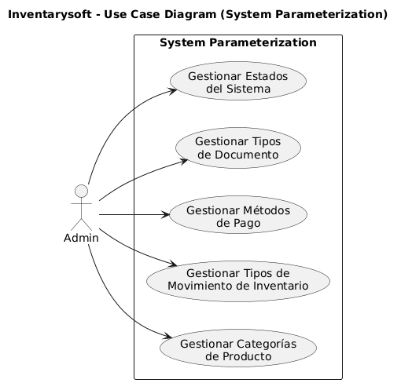
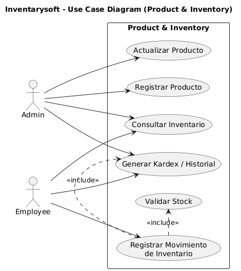
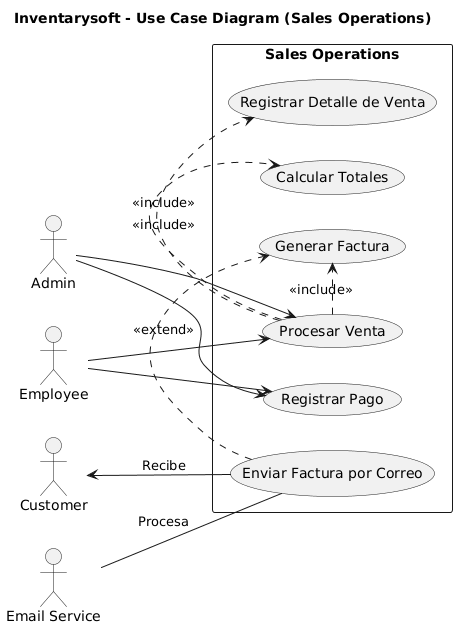
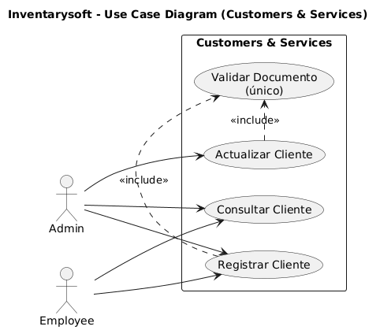
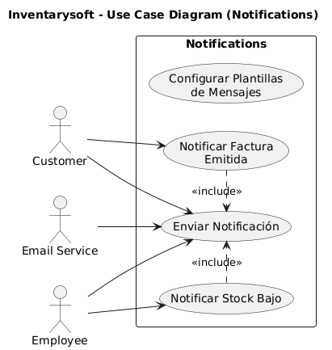